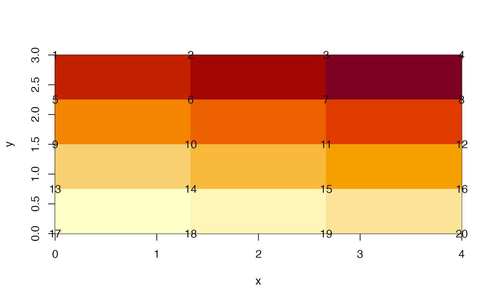

Build a “quadmesh” in R.
## Loading required package: sp
data(volcano)
volcano <- volcano[seq(1, nrow(volcano), by = 3), seq(1, ncol(volcano), by = 3)]
r <- setExtent(raster(volcano), extent(0, 100, 0, 200))
qm <- quadmesh(r)If you have the rgl package installed you can run the following code to produce an interactive plot.
library(rgl)
scl <- function(x) (x - min(x))/diff(range(x))
shade3d(qm, col = grey(scl(qm$vb[3,qm$ib])))
#rglwidget()A “quadmesh” is a dense mesh describing a topologically continuous surface of 4-corner primitives. I.e. a grid, without the “regular”. This is useful particularly when combined with map projections and texture mapping.
We are not limited to a regular grid, trivially let’s distort the mesh by a weird scaling factor.
The topology of the grid is still sound, but we are no longer bound to the regular constraint.
qm1 <- quadmesh(r)
qm1$vb[1,] <- qm$vb[1,] * qm$vb[2,]/54If you have the rgl package installed you can run the following code to produce an interactive plot.
open3d()
shade3d(qm1, col = grey(scl(qm1$vb[3,qm1$ib])))
#rglwidget()Why meshes at all?
The simplest kind of mesh is a basic raster. Consider a matrix of 12 values.
(m <- matrix(1:12, nrow = 3))## [,1] [,2] [,3] [,4]
## [1,] 1 4 7 10
## [2,] 2 5 8 11
## [3,] 3 6 9 12On its own this matrix has absolutely nothing to do with spatial data, it is literally a collection of 12 numeric values in a given order, and by the magic of programming we’ve nominated a shape of 3x4. We can’t help but think about this shape spatially however, but there’s a problem. Does each element occupy space or should we consider them to be infinitesimal locations?
R provides either interpretation (to simplify this story we nominate locations for the rows and columns explicitly).
When considered as an image, each matrix element occupies a certain space in width and height, but when considered as a point set the numbers simply float at the given locations. Which is correct? (Spoiler: Both are correct, it simply depends what we are doing.)
x <- seq(1, nrow(m)) - 0.5
y <- seq(1, ncol(m)) - 0.5
image(x, y, m)
text(expand.grid(x, y), lab = m[])The raster package defaults to the image interpretation and helpfully assumes the values are nominally at the centre points as shown above. We have to nominate the extent or we end up in 0,1 range, we also have to invert the order of the values because raster counts from the top of the page and R’s matrix uses column-major order.
## class : RasterLayer
## dimensions : 4, 3, 12 (nrow, ncol, ncell)
## resolution : 1.333333, 0.75 (x, y)
## extent : 0, 4, 0, 3 (xmin, xmax, ymin, ymax)
## crs : NA
## source : memory
## names : layer
## values : 1, 12 (min, max)R’s image and rasters in general are so efficient because they only store this minimal amount of information: the actual data values, and the extent and dimensions of the space they occur in. If we had to store the centre coordinate of every cell, or worse the corner coordinates then the data storage goes up dramatically. Every software that deals well with these kinds of data has to treat these coordinates as implicit. We can easily expand the centre coordinates.
xyz <- as.data.frame(r, xy = TRUE)
head(xyz)## x y layer
## 1 0.6666667 2.625 10
## 2 2.0000000 2.625 11
## 3 3.3333333 2.625 12
## 4 0.6666667 1.875 7
## 5 2.0000000 1.875 8
## 6 3.3333333 1.875 9
tail(xyz)## x y layer
## 7 0.6666667 1.125 4
## 8 2.0000000 1.125 5
## 9 3.3333333 1.125 6
## 10 0.6666667 0.375 1
## 11 2.0000000 0.375 2
## 12 3.3333333 0.375 3but to expand the corners we have to jump through some hoops and even then we get every instance of the corners, not only for each cell but to explicitly close the cell as a polygon.
as(as(raster::rasterToPolygons(r), "SpatialLinesDataFrame"),
"SpatialPointsDataFrame")## class : SpatialPointsDataFrame
## features : 60
## extent : 0, 4, 0, 3 (xmin, xmax, ymin, ymax)
## crs : NA
## variables : 4
## names : layer, Lines.NR, Lines.ID, Line.NR
## min values : 1, 1, 1, 1
## max values : 12, 12, 9, 1There are only 20 unique coordinates at the corners, which is where quadmesh comes in.
## List of 8
## $ vb : num [1:4, 1:20] 0 3 11 1 1.33 ...
## ..- attr(*, "dimnames")=List of 2
## .. ..$ : chr [1:4] "x" "y" "z" "1"
## .. ..$ : NULL
## $ material : list()
## $ normals : NULL
## $ texcoords : NULL
## $ meshColor : chr "vertices"
## $ ib : int [1:4, 1:12] 1 2 6 5 2 3 7 6 3 4 ...
## $ raster_metadata:List of 7
## ..$ xmn : num 0
## ..$ xmx : num 4
## ..$ ymn : num 0
## ..$ ymx : num 3
## ..$ ncols: int 3
## ..$ nrows: int 4
## ..$ crs : chr NA
## $ crs : chr NA
## - attr(*, "class")= chr [1:3] "quadmesh" "mesh3d" "shape3d"This is a mysterious seeming data structure, it is the mesh3d type of the ‘rgl’ package, rarely seen in the wild.
The structure is vb, the coordinates of the mesh - these are the actual corner coordinates from the input raster.

par(op)Notice how these are unique coordinates, there’s no simple relationship between the cell and its value and its four corners. This is because they are shared between neighbouring cells. The relationship is stored in the ib array, this has four rows one for each corner of each cell. There are 12 cells and each has four coordinates from the shared vertex pool. The cells are defined in the order they occur in raster.
qm$ib## [,1] [,2] [,3] [,4] [,5] [,6] [,7] [,8] [,9] [,10] [,11] [,12]
## [1,] 1 2 3 5 6 7 9 10 11 13 14 15
## [2,] 2 3 4 6 7 8 10 11 12 14 15 16
## [3,] 6 7 8 10 11 12 14 15 16 18 19 20
## [4,] 5 6 7 9 10 11 13 14 15 17 18 19It works directly with rgl function, and can be used in more raw form.
If you have the rgl package installed you can run the following code to produce an interactive plot.
rgl.clear()
library(rgl)
shade3d(qm)
rglwidget()
rgl.clear()
quads3d(t(qm$vb)[qm$ib,], col = rep(c("grey", "black"), each = 4))
aspect3d(1, 1, 1)
#rglwidget()The primary means to create this format from a raster is for 3D plotting, but because we have access to the coordinate directly it provides other uses. We can transform the coordinates (i.e. a map projection) or manipulate them and augment the Z value (for example) in flexible ways.
(The usual way of driving rgl grid surfaces is rgl.surface but this is limited to the centre-point interpretation only - more than the x, y, z list interface as image() is, i.e. it can take an individual x,y pair for every cell, but it cannot properly represent the cell-as-area as image can. For this we need to use shade3d, and actual meshd3d types in rgl).
Alternatively the centre-of-cell interpretation of a raster is available.
If you have the rgl package installed you can run the following code to produce an interactive plot.
rgl.clear()
wire3d(qm)
tm <- triangmesh(r)
shade3d(tm, col = rep(c("firebrick", "dodgerblue", "grey"), each = 3))
#rglwidget()There is a discrete form for both quad and triangles meshes. See how each quad has a constant z-value.
If you have the rgl package installed you can run the following code to produce an interactive plot.
dqm <- dquadmesh(r)
rgl.clear()
shade3d(dqm)
#rglwidget()When the centre-point interpretation of triangles are discrete we actually need to modify their vertices to see that they are separable.
dtm <- dtriangmesh(r)
dtm$vb[3, ] <- jitter(dtm$vb[3, ], 8)If you have the rgl package installed you can run the following code to produce an interactive plot.
All quad meshes may be specified trivially as a triangular mesh, there’s a straightforward re-indexing from quads to triangles by splitting each set of four into two sets of three. If the quad mesh is regular there’s a literal ambiguity about the best choice (diagonal up, or down?) which leads us to the real value of a triangulated mesh. The triangle mesh may be denser or coarser depending on need, something that a regular grid cannot do. Mesh creation is a dark and difficult science, but has been formalized with a strong math basis in recent years. It’s still hard to do constrained polygon triangulation, and this lack probably drove the transition of topology GIS to modern SF GIS more than any other issue.
But, modern meshing is now very well established, but its use in open and free contexts is still relatively rare. (We can see this changing in Javascript and D3 in particular.)
Physical modellers, engineering construction, fluid hydrodynamics use these techniques in detail, but finite-element level model is rarely applied in GIS contexts.
Consider two kinds of meshes, a simple triangulation and a short piecewise line composed of segments. The triangles and segments both fill space in a particular way, they inhabit 2D and 1D topology in a way that is independent of the actual geometric space in use. We can flatten the triangles into a plane or lay the line segments each at right angles to each other without changing this topological relation, as a mesh the triangles will still have the same neighbours and and the line will still have the same segments in the same order. The geometry is specified by the vertices between these topological elements, and we may define these in x,y, in x,y,z or x,y,z,time - or in any geometric space we choose.
planar and rgl plots of meshes
The topology itself may need to be defined in a particular origin geometry, and for example the Delaunay triangulation for connecting planar x,y points gives a particular mesh - but once this is defined we can transform the original geometry (say it was UTM, zone 55 south) into a global Lambert Azimuthal Equal Area, or onto a geocentric shell with radius 637187m - the relationship between the primitives (triangles, edges) does not change. Not all geometries make sense for a given mesh, but with a mesh we are quite free to choose amongst many sensible alternatives, the primitives provide a straightforward interpolative space along with other physical properties might be assumed to vary. This is the basis of barycentric interpolation and simplistic linear interpolation with depth over time, for example.
It’s the mesh indexing of how the primitives relate to a given geometry that matters, not the original (or particular) geometry in play. This means that if we triangulate in the local coordinate system but then map the mesh in a different one it will no longer “be Delaunay”.
This also opens up the idea that we can store multiple coordinate system choices in one data set.
There are efficiencies for different kinds of mesh, for raster we need only store the cell values and the offset and scale to position the grid. It’s completely parameterized, and if we need the centre or corner coordinates they are implicit, no need to generate them. If we store a connected triangular mesh, it becomes wasteful to store every path around each triangle as coordinates, and it’s actually error-prone because we need to update all instances of coordinates at any shared boundary. A better approach is to keep the index of each triangle, against a set of shared vertices. We can augment the vertices, transform them and so on and because they are uniquely defined the mesh is automatically correctly updated with no gaps.
Point clouds provide a range of implicit shapes from set of raw geometry. There’s the “ground”, and some challenging algorithms exist to identify which points best represent this particular surface in a set of points. We can define this set of ground points implicitly, by storing a reference to the relevant vertices from the entire set. If we use this to actually connect the points together then we still store those indexes in triplets, the triangulation of those points in the X-Y plane. Notice how the points are connnected together in a nominated X-Y space, it doesn’t matter where the Z value/s are, they only contributed to the choice of ground points. There’s a chain of implicit, indexed structures that we can construct from these samples of raw geometry. Other algorithms might include the spectral properties or other measurements for the particular definition of the target surface.
From the mesh perspective SF types are explicitly described piecewise shapes. Every coordinate is stored explicitly as it occurs, but we can flip this view and rather store the entities involved (and name them) together. There are vertices and edges, and these are grouped into higher entities such as paths, and paths are grouped together as lines or polygons*, and these are further grouped into features. By storing each element in its own set we have opportunity for explicit topology (shared vertices, shared edges).
We lose the ability to arbitrarily transmit atomic features around, but this can easily be achieved for a given set of features anyway.